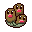
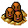
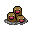

Pokédex / #051

Dugtrio #051
Ground
In battle, it digs through the ground and strikes the unsuspecting foe from an unexpected direction.
Generation 1 · Kanto

Stats
| Attack | 80 | |
|---|---|---|
| Defense | 50 | |
| Sp. Atk | 50 | |
| Sp. Def | 70 |
In the wild
| Wild level | 35–45 |
|---|---|
| HP | 35 |
| Experience | 12 |
| Egg groups | Field |
Evolution
- Evolves from Diglett at level 30.
Moves
| Level | Move | Type | Category | Power | Energy | Cooldown | Effect | |
|---|---|---|---|---|---|---|---|---|
| 1 | Tackle | Normal | Physical | 15 | 15 | 1s | Tackle is one of the most common and basic moves a Pokemon learns. It deals damage with no additional effects. | |
| 5 | Scratch | Normal | Physical | 40 | 40 | 6s | Scratch inflicts damage and has no secondary effect. | |
| 10 | Sand-Attack | Ground | Status | – | 25 | 10s | Sand-Attack lowers the target's Accuracy by one stage. | |
| 15 | Magnitude | Ground | Physical | 85 | 95 | 18s | Magnitude does not have a set base power. Instead the base power of this move varies on a magnitude scale between four and ten. | |
| 20 | Mud Bomb | Ground | Special | 65 | 80 | 10s | Mud Bomb deals damage and has a 30% chance of lowering the target's Accuracy by one stage. | |
| 25 | Slash | Normal | Physical | 70 | 70 | 11s | Slash deals damage and has an increased critical hit ratio. | |
| 35 | Mud-Slap | Ground | Special | 20 | 30 | 10s | Mud-Slap deals damage and lowers the target's Accuracy by one stage. | |
| 40 | Tri Attack | Normal | Special | 80 | 75 | 12s | Tri Attack deals damage and has a 20% chance of paralyzing, burning or freezing the target - i.e. a 6.67% chance of each status condition. | |
| 45 | Sand Tomb | Ground | Physical | 7 | 45 | 15s | Sand Tomb inflicts damage, hiting the target 5 times per use and lower the Speed of the target by two stages. | |
| 50 | Earth Power | Ground | Special | 9 | 100 | 21s | Earth Power deals damage and has a 10% chance of lowering the target's Special Defense by one stage. | |
| 55 | Night Slash | Dark | Physical | 70 | 70 | 11s | Night Slash deals damage and has an increased critical hit ratio. | |
| 60 | Earthquake | Ground | Physical | 50 | 110 | 23s | Earthquake deals damage. | |
| 65 | Bulldoze | Ground | Physical | 60 | 70 | 18s | The user strikes everything around it by stomping down on the ground. This lowers the Speed stat of those hit. | |
| 70 | Sucker Punch | Dark | Physical | 80 | 80 | 12s | Sucker Punch deals damage and has no secondary effect. | |
| 75 | Fissure | Ground | Physical | 110 | 110 | 17s | Fissure deals damage and has no secondary effect. |
Field abilities
DigCut
Special abilities
Sand VeilArena Trap
Egg moves
Ancient PowerAstonishBeat UpEndureFaint AttackFinal GambitHeadbuttMementoMud BombPursuitReversalScreechUproar
Technical machines
Aerial AceBideBody SlamDouble EdgeDouble TeamEarthquakeFissureHyper BeamMimicMud SlapRageRestRock SlideRock TombSandstormSludge BombSoftboiledSubstituteTake DownToxic
Drops
| Item | Amount | Chance | |
|---|---|---|---|
| lightweight fabric | 1 | 83.3% | |
| stone orb | 1 | 33.3% | |
| shadow rock | 1 | 29.8% | |
| rare sandbag | 1 | 11.9% | |
| onigiri | 1–3 | 3% | |
 | dugtrio doll | 1 | 0.1% |
| Earth Plate | 1 | 0.05% | |
| held soft sand | 1 | 0.02% | |
| TM 26 | 1 | 0.01% | |
| TM 46 | 1 | 0.01% |